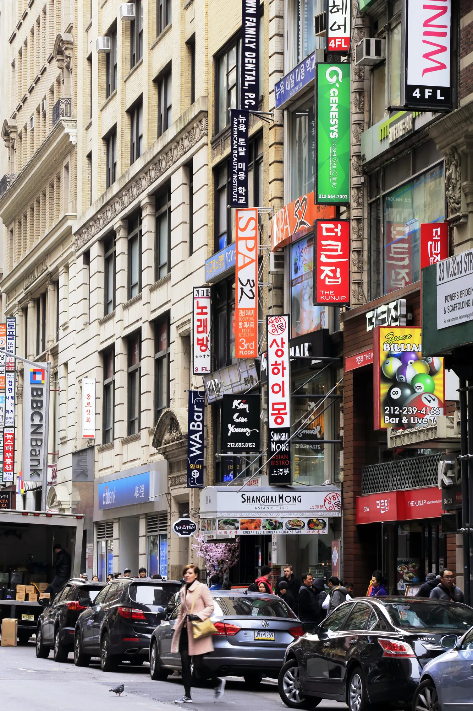
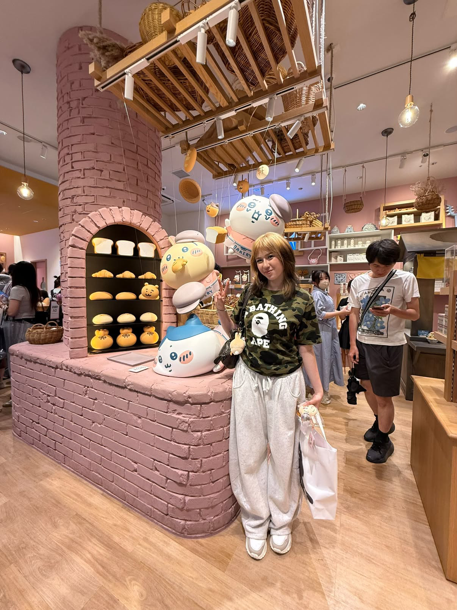
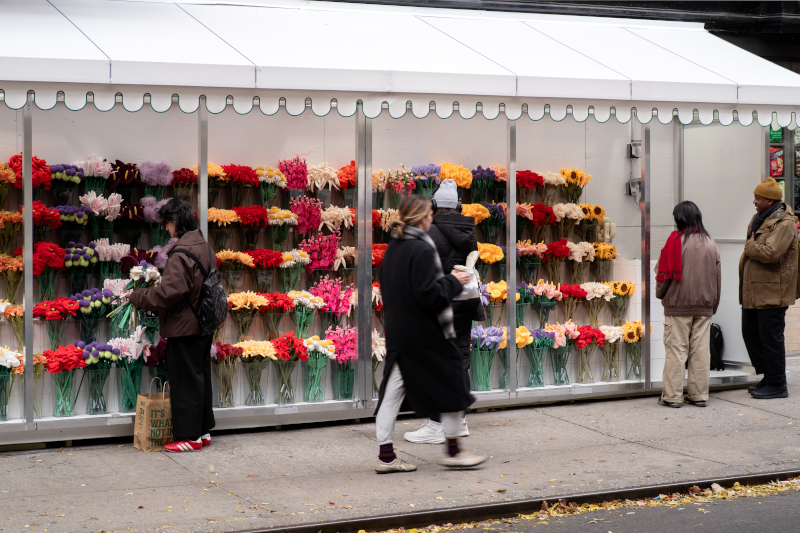

Koreatown

Type: Food / Shopping / Activities
Izzy recommends Koreatown because there is a wide range of things to do in one area.
"You could spend your whole day there."
A community guide to the places New Yorkers love, remember, and recommend.
Discover New York through people who actually know and love the city.
Izzy is the first contributor to I Know a Spot. She has lived in New York her whole life and shares places that feel personal, familiar, and worth recommending.

"The city is my home. I have many deep ties to New York City."
For Izzy, New York is not only about famous landmarks. It is about neighborhoods, culture, small businesses, memories, and communities.

Type: Food / Shopping / Activities
Izzy recommends Koreatown because there is a wide range of things to do in one area.
"You could spend your whole day there."

Type: Immersive Art Experience.
Izzy recommends Mercer Labs for its interactive rooms, including spaces filled with bubbles, flowers, and cloud-like environments.
"It's beautiful and really fun"

Location: Upper East Side
Type: Art / Exhibition
Izzy likes smaller art experiences because they are a good way to discover different artists in New York.
Type: Fashion / Archive
Izzy recommends the store because of Vivienne Westwood's connection to punk and alternative fashion culture.

Location: Near Union Square
Type: Shop
Izzy discovered Sweet Cats completely by accident while walking to class.
"I saw this completely pink store. I walked in and thought, 'I'm home.'"

Type: Food
If Izzy were leaving New York, one of the last things she would want is a real New York slice.
"I would need a real New York pizza before leaving"

Type: Shopping / Outdoor Space
Izzy likes the area because it combines shopping with outdoor spaces near the water.
Izzy usually discovers new places through friends, TikTok, Instagram, or simply by walking around the city.
"I definitely trust my friends more."
She trusts personal recommendations because she can ask questions and hear from someone who has actually been there.
A useful recommendation is more than just a location.
I Know a Spot is designed to grow beyond one person's recommendations. Each contributor can share the places they personally love, remember, or think others should know about.
Izzy is the first contributor, but future contributors could add their own spots, stories, photos, and tips.
"Walk faster. And don't stop in the middle of the sidewalk. Just move."